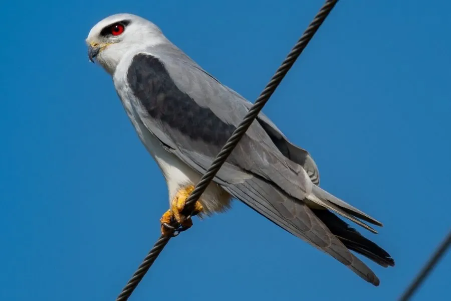

鸟类 · 动物界
黑翅鸢 Elanus caeruleus

体型小巧的猛禽，通体灰白、翅上有一块黑色斑，红色眼睛，能在空中悬停寻找猎物，分布于非洲和亚洲。
- 分类
- 门脊索动物门纲鸟纲目鹰形目科鹰科属黑翅鸢属
- 栖息环境
- 草原、农田、灌丛与湿地边缘
- 地理分布
- 非洲、南亚、东南亚及中国南方
- 保护级别
- IUCN 无危（LC）；中国国家二级保护动物
物种志
黑翅鸢体长 31–37 厘米，翼展 75–90 厘米，体重 230–350 克。它的上体灰色，下体白色，肩部和翅上有一块醒目的黑色斑，眼睛红色，喙和爪黄色；尾羽短，略呈叉状。
黑翅鸢分布于非洲、南亚、东南亚和中国南方，栖息在草原、农田、灌丛和湿地边缘。它常在空中悬停，观察地面的鼠类、昆虫、蜥蜴和小型鸟类，然后俯冲捕捉。黑翅鸢多单独或成对活动，繁殖期在树上筑巢，每窝产 3–4 枚卵，孵化约 25–28 天。它种群稳定，被列为无危，在中国属于国家二级保护动物。
形态与习性
- 食性鼠类、昆虫、蜥蜴与小型鸟类
- 体长31–37 cm
- 翼展75–90 cm
- 体重230–350 g
- 繁殖每窝 3–4 枚卵，孵化约 25–28 天
- 特征翅上有黑色斑，眼睛红色
趣味知识
- 黑翅鸢能在空中悬停，锁定地面的鼠类和昆虫。
- 它翅上有一块黑色斑，眼睛呈红色，容易辨认。
- 黑翅鸢在中国属于国家二级保护动物。